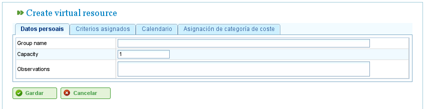

Gestão de Recursos
Contents
O programa gere dois tipos distintos de recursos: pessoal e máquinas.
Recursos de Pessoal
Os recursos de pessoal representam os trabalhadores da empresa. As suas características principais são:
- Cumprem um ou mais critérios genéricos ou específicos de trabalhadores.
- Podem ser especificamente atribuídos a uma tarefa.
- Podem ser atribuídos genericamente a uma tarefa que requer um critério de recurso.
- Podem ter um calendário predefinido ou específico, conforme necessário.
Recursos Máquina
Os recursos máquina representam as máquinas da empresa. As suas características principais são:
- Cumprem um ou mais critérios genéricos ou específicos de máquinas.
- Podem ser especificamente atribuídos a uma tarefa.
- Podem ser atribuídos genericamente a uma tarefa que requer um critério de máquina.
- Podem ter um calendário predefinido ou específico, conforme necessário.
- O programa inclui um ecrã de configuração onde pode ser definido um valor alfa para representar a relação máquina/trabalhador.
- O valor alfa indica a quantidade de tempo de trabalhador necessária para operar a máquina. Por exemplo, um valor alfa de 0,5 significa que cada 8 horas de operação da máquina requerem 4 horas do tempo de um trabalhador.
- Os utilizadores podem atribuir um valor alfa especificamente a um trabalhador, designando esse trabalhador para operar a máquina durante essa percentagem de tempo.
- Os utilizadores também podem fazer uma atribuição genérica baseada num critério, de modo que uma percentagem de utilização seja atribuída a todos os recursos que cumprem esse critério e têm tempo disponível. A atribuição genérica funciona de forma semelhante à atribuição genérica para tarefas, conforme descrito anteriormente.
Gestão de Recursos
Os utilizadores podem criar, editar e desactivar (mas não eliminar permanentemente) trabalhadores e máquinas da empresa navegando para a secção "Recursos". Esta secção fornece as seguintes funcionalidades:
- Lista de Trabalhadores: Apresenta uma lista numerada de trabalhadores, permitindo aos utilizadores gerir os seus detalhes.
- Lista de Máquinas: Apresenta uma lista numerada de máquinas, permitindo aos utilizadores gerir os seus detalhes.
Gestão de Trabalhadores
A gestão de trabalhadores é acedida indo à secção "Recursos" e seleccionando "Lista de trabalhadores". Os utilizadores podem editar qualquer trabalhador da lista clicando no ícone de edição padrão.
Ao editar um trabalhador, os utilizadores podem aceder aos seguintes separadores:
Detalhes do Trabalhador: Este separador permite aos utilizadores editar os detalhes básicos de identificação do trabalhador:
- Nome
- Apelido(s)
- Documento de identificação nacional (NIF)
- Recurso baseado em fila (ver secção sobre Recursos Baseados em Fila)

Edição dos Dados Pessoais dos Trabalhadores
Critérios: Este separador é utilizado para configurar os critérios que um trabalhador cumpre. Os utilizadores podem atribuir quaisquer critérios de trabalhador ou genéricos que considerem adequados. É crucial que os trabalhadores cumpram critérios para maximizar a funcionalidade do programa. Para atribuir critérios:
- Clique no botão "Adicionar critérios".
- Pesquise o critério a adicionar e seleccione o mais adequado.
- Clique no botão "Adicionar".
- Seleccione a data de início a partir da qual o critério se torna aplicável.
- Seleccione a data de fim para aplicar o critério ao recurso. Esta data é opcional se o critério for considerado indefinido.

Associação de Critérios a Trabalhadores
Calendário: Este separador permite aos utilizadores configurar um calendário específico para o trabalhador. Todos os trabalhadores têm um calendário predefinido atribuído; no entanto, é possível atribuir um calendário específico a cada trabalhador com base num calendário existente.

Separador de Calendário para um Recurso
Categoria de Custo: Este separador permite aos utilizadores configurar a categoria de custo que um trabalhador cumpre durante um determinado período. Esta informação é utilizada para calcular os custos associados a um trabalhador num projecto.

Separador de Categoria de Custo para um Recurso
A atribuição de recursos é explicada na secção "Atribuição de Recursos".
Gestão de Máquinas
As máquinas são tratadas como recursos para todos os efeitos. Por isso, à semelhança dos trabalhadores, as máquinas podem ser geridas e atribuídas a tarefas. A atribuição de recursos é abordada na secção "Atribuição de Recursos", que explicará as características específicas das máquinas.
As máquinas são geridas a partir da entrada de menu "Recursos". Esta secção tem uma operação chamada "Lista de máquinas", que apresenta as máquinas da empresa. Os utilizadores podem editar ou eliminar uma máquina desta lista.
Ao editar máquinas, o sistema apresenta uma série de separadores para gerir diferentes detalhes:
Detalhes da Máquina: Este separador permite aos utilizadores editar os detalhes de identificação da máquina:
- Nome
- Código da máquina
- Descrição da máquina

Edição dos Detalhes da Máquina
Critérios: Tal como nos recursos de trabalhadores, este separador é utilizado para adicionar critérios que a máquina cumpre. Dois tipos de critérios podem ser atribuídos a máquinas: específicos de máquinas ou genéricos. Os critérios de trabalhadores não podem ser atribuídos a máquinas. Para atribuir critérios:
- Clique no botão "Adicionar critérios".
- Pesquise o critério a adicionar e seleccione o mais adequado.
- Seleccione a data de início a partir da qual o critério se torna aplicável.
- Seleccione a data de fim para aplicar o critério ao recurso. Esta data é opcional se o critério for considerado indefinido.
- Clique no botão "Guardar e continuar".

Atribuição de Critérios a Máquinas
Calendário: Este separador permite aos utilizadores configurar um calendário específico para a máquina. Todas as máquinas têm um calendário predefinido atribuído; no entanto, é possível atribuir um calendário específico a cada máquina com base num calendário existente.

Atribuição de Calendários a Máquinas
Configuração da Máquina: Este separador permite aos utilizadores configurar a relação entre máquinas e recursos de trabalhadores. Uma máquina tem um valor alfa que indica a relação máquina/trabalhador. Como mencionado anteriormente, um valor alfa de 0,5 indica que são necessárias 0,5 pessoas para cada dia completo de operação da máquina. Com base no valor alfa, o sistema atribui automaticamente trabalhadores associados à máquina assim que a máquina é atribuída a uma tarefa. Associar um trabalhador a uma máquina pode ser feito de duas formas:
- Atribuição Específica: Atribuir um intervalo de datas durante o qual o trabalhador é atribuído à máquina. Esta é uma atribuição específica, pois o sistema atribui automaticamente horas ao trabalhador quando a máquina está agendada.
- Atribuição Genérica: Atribuir critérios que devem ser cumpridos pelos trabalhadores atribuídos à máquina. Isto cria uma atribuição genérica de trabalhadores que cumprem os critérios.

Configuração de Máquinas
Categoria de Custo: Este separador permite aos utilizadores configurar a categoria de custo que uma máquina cumpre durante um determinado período. Esta informação é utilizada para calcular os custos associados a uma máquina num projecto.

Atribuição de Categorias de Custo a Máquinas
Grupos de Trabalhadores Virtuais
O programa permite aos utilizadores criar grupos de trabalhadores virtuais, que não são trabalhadores reais mas pessoal simulado. Estes grupos permitem aos utilizadores modelar o aumento da capacidade de produção em momentos específicos, com base nas configurações do calendário.
Os grupos de trabalhadores virtuais permitem aos utilizadores avaliar como o planeamento do projecto seria afectado pela contratação e atribuição de pessoal que cumpre critérios específicos, auxiliando assim o processo de tomada de decisão.
Os separadores para criar grupos de trabalhadores virtuais são os mesmos que para configurar trabalhadores:
- Dados Gerais
- Critérios Atribuídos
- Calendários
- Horas Associadas
A diferença entre grupos de trabalhadores virtuais e trabalhadores reais é que os grupos de trabalhadores virtuais têm um nome para o grupo e uma quantidade, que representa o número de pessoas reais no grupo. Existe também um campo para comentários, onde podem ser fornecidas informações adicionais, como qual projecto necessitaria de contratações equivalentes ao grupo de trabalhadores virtuais.

Recursos Virtuais
Recursos Baseados em Fila
Os recursos baseados em fila são um tipo específico de elemento produtivo que pode estar não atribuído ou ter 100% de dedicação. Por outras palavras, não podem ter mais do que uma tarefa agendada ao mesmo tempo, nem podem estar sobre-alocados.
Para cada recurso baseado em fila, é criada automaticamente uma fila. As tarefas agendadas para estes recursos podem ser geridas especificamente utilizando os métodos de atribuição fornecidos, criando atribuições automáticas entre tarefas e filas que correspondem aos critérios necessários, ou movendo tarefas entre filas.